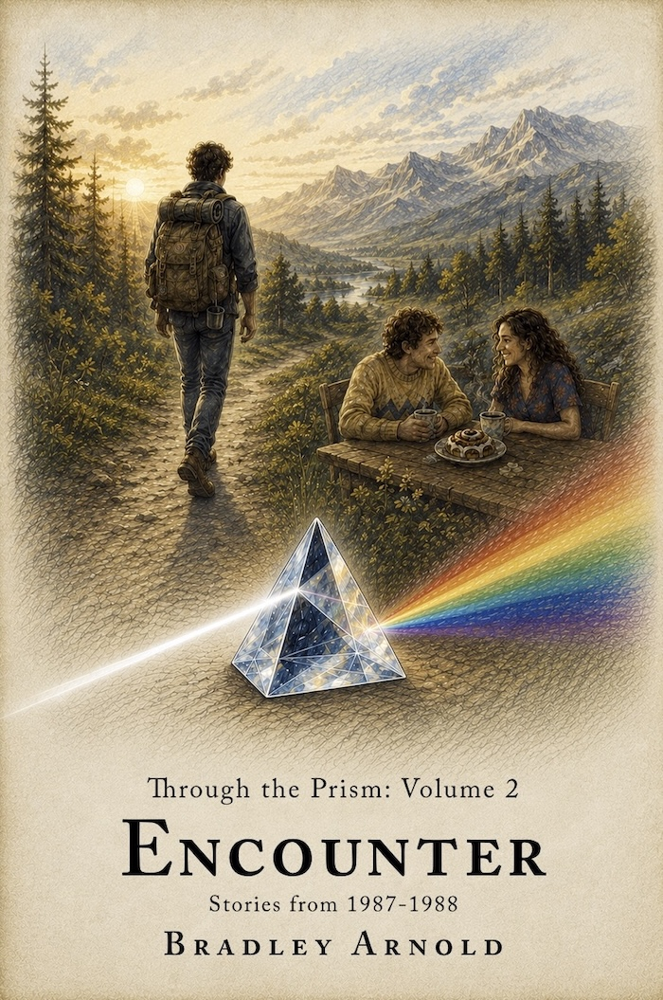

Curiosity
The desire to explore something simply because it is interesting, without needing to know in advance what we will discover.
An Ongoing Conversation About Being Human

Through the Prism — Volume I
The joy of questioning.
What happens when we look at familiar things with unfamiliar eyes?
Wonder brings together stories, essays, poems, and imaginative explorations that invite us to rediscover the extraordinary within the seemingly ordinary.
Through humor, imagination, philosophical inquiry, and sometimes rather peculiar questions, these writings explore what becomes possible when we allow ourselves to wonder.
Not every question needs an immediate answer. Sometimes the question itself is the beginning of an adventure.
We spend much of our lives trying to understand things. We collect information, develop explanations, establish beliefs, and become increasingly comfortable with what we think we know.
Yet understanding can sometimes become an obstacle to discovery.
Once we believe we know what something is, we may cease to notice what else it might be.
Wonder begins with the willingness to look again, to entertain another possibility, and occasionally to admit that something we thought was obvious is considerably more interesting than we imagined.
The writings in this volume celebrate that willingness. They invite us to explore without always knowing where the exploration will lead.
There is a particular joy in discovering that the world is still capable of surprising us.
Children frequently ask questions that adults have long since stopped asking.
Sometimes those questions seem simple. Sometimes they seem rather silly. Sometimes they reveal how little we actually understand about something we have taken for granted.
As we grow older, we acquire knowledge, experience, and increasingly sophisticated ways of explaining the world.
But growing older need not mean becoming less curious.
We need not abandon what we have learned in order to look at life with fresh eyes. Perhaps we can bring the experience of adulthood into conversation with the curiosity of childhood.
Some of the most interesting discoveries begin when we permit ourselves to ask a question that seems too simple to ask.
The desire to explore something simply because it is interesting, without needing to know in advance what we will discover.
The freedom to entertain possibilities, create unfamiliar worlds, and reconsider the boundaries of the world we inhabit.
Rediscovering the willingness to notice, question, play, and be surprised by ordinary experiences.
Discovering that laughter and seemingly ridiculous ideas can reveal things that seriousness sometimes overlooks.
Examining familiar assumptions and allowing questions to open doors rather than merely lead toward predetermined answers.
Discovering unexpected richness in experiences, objects, and encounters that might otherwise escape our attention.
The writings in Wonder move between imaginative fiction, philosophical reflection, poetry, humor, and explorations of everyday life.
Some invite us into unfamiliar worlds. Others encourage us to look more carefully at the world we already inhabit.
Readers need not approach these writings with the intention of discovering a single underlying message. Different pieces may suggest different possibilities, and different readers may discover different things within them.
Part of the adventure belongs to the reader.
An illustration can become another way of entering a story.
It may draw our attention to something we had not noticed, suggest a different interpretation, or simply invite us to spend a little more time in an imaginary world.
The illustrations associated with Through the Prism are part of the continuing creative exploration of these writings.
Like the stories themselves, they leave room for the imagination of the person encountering them.
My experiences as a writer and as an educator have often overlapped.
Both have reminded me that learning is more than the acquisition of information. It also involves noticing, questioning, imagining, reconsidering, and discovering relationships between ideas.
A good question can sometimes be more valuable than a good answer, particularly when it encourages us to continue thinking.
Wonder is not something we need to outgrow in order to become knowledgeable. It is something that can help keep our knowledge alive.
Title: Wonder
Collection: Through the Prism
Volume: I
Author: Bradley Arnold
Subjects: Fiction, philosophy, poetry, curiosity, imagination, humor, childhood, and the human experience.
Wonder is available individually and is the first volume of the three-volume Through the Prism collection.
Wonder opens possibilities. Encounter brings us into contact with them. Recognition invites us to reconsider what we have seen.
Continue exploring the other perspectives within Through the Prism.

Exploring what happens when we encounter unfamiliar people, ideas, experiences, and perspectives.
Explore Volume II
Discovering new ways of understanding ourselves, our assumptions, and the world we experience.
Explore Volume IIIPerhaps growing older need not mean having fewer questions.
Perhaps it means discovering more interesting ones.